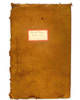
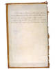
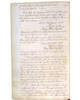
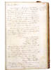

Martha Ballard's Story
Chapter 10
Rebecca Foster swears a Rape "on a number of men"
Rebecca Foster didn't keep quiet. In October, Martha wrote, "mrs Foster has Sworn a Rape on a number of men among whome is Judge North."
| Link to see the official indictment. |
Rebecca Foster was taking her case to court. And Martha Ballard now had to testify. In fact, she had to testify against one of the most powerful men in the county, Judge Joseph North. In addition, North often employed her husband. Looking at this record of a Boston meeting in the Kennebec Purchase Records, we see that Joseph North was an agent for the wealthy absentee landholders (the "Kennebec Proprietors"), and that Martha's husband, Ephraim Ballard, worked for them as a surveyor.
The day before Martha heard that Rebecca had "sworn a rape" on Judge North, he called Martha to the door and "interogated her" about what she was going to say. "I was Cald to mr Fosters door & askt Some questions...Colo North interagated me Concerning what Conversation mrs Foster had with me concerning his Conduct."
Martha knew she had to be careful. She wanted to remember precisely what Rebecca Foster had told her.
| previous |
What happened to Foster's wife while he was out of town? | |
| next |
On December 23, she testified before the court in Vassalboro. When she returned home she wrote down everything she could remember. |
| Kennebec Purchase Records October 12, 1768 - November 6, 1800 |
View Image View Frames version |
| Front Cover | Inside Cover | Page 229 | Page 230 | ||
 |
 |
 |
 |